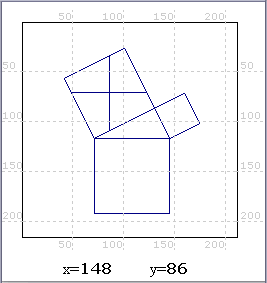

| coordenades XY PREGUNTA D'ARROSSEGAR PREGUNTA DE ZONES SENSIBLES |
|
Com funciona? Aquesta eina facilita la tasca d'obtenir les coordenades XY., necessàries a l'hora de crear preguntes d'arrossegar i de zones sensibles. En clicar sobre CoordenadesXY s'obre una nova finestra, que mostra la imatge del fons triat per la pregunta. Sobre aquesta imatge es superposa una graella de coordenades X i Y. Posant el ratolí sobre la imatge i movent-lo es poden anar obtenint els valors de coordenades corresponents a qualsevol punt. Aquesta eina és de molta utilitat tant per trobar la posició inicial dels objectes a arrossegar i les coordenades de les zones destí de les preguntes d'arrossegar com per indicar les zones a les preguntes de zones sensibles. |
|
Exemple A continuació es mostra un exemple d'imatge de fons amb la graella de coordenades  |